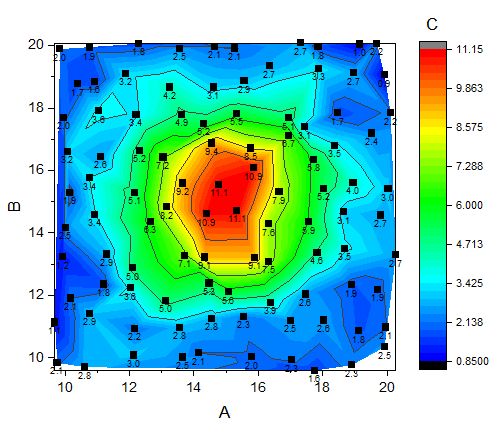
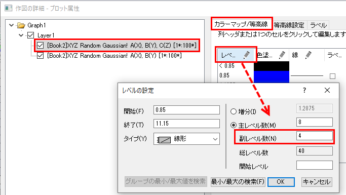
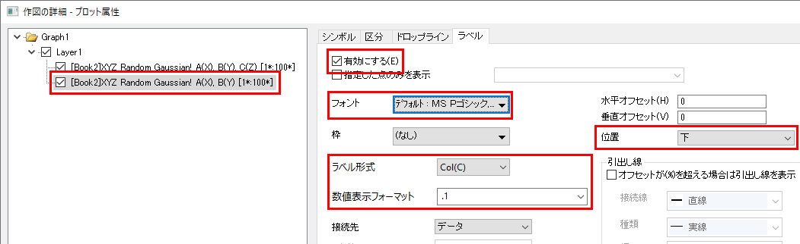
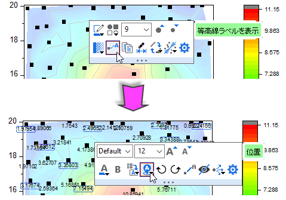

XYデータポイントとZラベルの等高線図
Contour-XYData-ZLabel
概要
このチュートリアルはXYZデータから等高線を作成し、Zの値を各XYデータポイントにデータラベルとして貼り付ける方法を示します。

学習する項目
このチュートリアルでは、以下の項目について説明します。
- XYZデータから等高線図を作成する
- レベル、等高線、カラーマップを編集する
- 散布図を等高線図の上に作図する
- 散布点にラベルを付ける
ステップ
- 新しいワークブックを開き、Sample/Matrix_Conversion_and_Gridding/XYZ_Random_Gaussian.datファイルをインポートします。
- 列Cを選択し、Z列として設定します。そして全ての列を選択してから、メインメニューで作図：等高線図：等高線図-色付きと操作して等高線図を作図します。

- B列を選択して、B列の右端にマウスを移動します。ドラッグアンドドロップアイコンが表示されます。クリックしながらデータを等高線図にドラッグアンドドロップして、散布図として追加します。

- グラフをダブルクリックして、作図の詳細ダイアログを開きます。このダイアログでカラーマップ/等高線タブを開きます。すると、左側のパネルにある等高線図が選択されています。レベル…ヘッダをクリックしてレベルの設定ダイアログを開き、副レベル数を4とします。
- 
- OKボタンをクリックして、作図の詳細ダイアログに戻ります。散布図を選択してからラベルタブを開き、有効にするにチェックを付けてこのタブをアクティブにします。サイズを12、位置を下、ラベル形式をCol(C)に設定し、数値表示フォーマットに.1を入力します。
- 
- OKボタンをクリックしてダイアログを閉じます。Zの値がラベルとしてグラフに追加されます。
 | Origin 2020以降では、散布図のプロットを選択し、さらに散布図の点を選択して表示されたミニツールバーのボタンからデータラベルを表示をクリックします。いったんラベルを有効にすればそれらを選択するとラベルのフォーマットについてのミニツールバーが表示されるようになり、ラベルソースや位置を編集できます。
- 
|